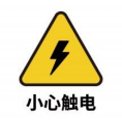

安全须知
1. 简介
本章详细介绍了有关对大象机器人执行安装、维护和维修工作的人员的常规安全信息。请在搬运、安装和使用前，先充分阅读和理解本章节的内容与注意事项。
2. 危险识别
协作机器人的安全性建立在正确配置和使用机器人的前提上。并且，即使遵守所有的安全指示，操作者所造成的伤害或损伤依然有可能发生。因此，了解机器人使用的安全隐患是非常重要的，有利于防患于未然。
以下表 1-1~3 是使用机器人的情境下可能存在的常见安全隐患 ∶
表 1-1 危险级安全隐患
 |
|---|
| 1 机器人搬运过程中的错误操作导致的人身伤害或者机器人损伤。 |
| 2 未按要求固定机器人，例如螺钉缺少或螺钉未上紧、底座锁付能力不足以稳定支撑机器人进行高速运动等造成机器人倾倒，导致人身伤害或者机器人损伤。 |
| 3 未进行机器人的正确安全功能配置，或者少安装了安全防护工具等，造成机器人安全功能未能发挥作用，从而引起危险。 |
表 1-2 警告级安全隐患
 |
|---|
| 1 调试程序时请勿在机器人运动范围内逗留，不合适的安全配置可能无法避免可能造成人身伤害的碰撞。 |
| 2 机器人与其他设备连接可能引发新的危险，需要重新进行全面的风险评估。 |
| 3 因工作环境中的其他设备或者机器人末端执行器等尖锐表面造成刮伤、刺伤。 |
| 4 机器人是精密机械，踩踏可能造成机器人损伤。 |
| 5 夹持不到位或关闭机器人电源、气源前（未确定末端执行器是否牢固夹持物因为失去动力而掉下）未将夹持的物体取下，可能会引起危险，例如末端执行器损坏、人被砸伤等。 |
| 6 机器人存在意外移动的风险，在任何情况下，切勿站在机器人任何轴的下方！ |
| 7 机器人是精密机械，搬运时不能平稳放置可能会引起振动，可能会引起机器人内部部件的损伤。 |
| 8 机器人与普通机械设备相比自由度更多、运动范围更大，不满足运动范围可能会引起意外的碰撞。 |
表 1-3 有可能导致触电的安全隐患
|  |
|---|
| 1 使用非原装电缆可能会引发未知危险。 |
| 2 用电设备接触液体可能导致漏电危险。 |
| 3 电气连接错误时可能存在触电隐患。 |
| 4 请务必在关闭控制器与相关装置电源并拔出电源插头之后进行更换作业。如果在通电的状态下进行作业，则可能会导致触电或故障。 |
3. 安全注意事项
使用机械臂时应遵循如下安全规则：
- 机械臂属于带电设备，非专业人士不得随意更改线路，否则容易给设备或者人身带来伤害。
- 操作机械臂时，应当严格遵守当地的法规和规范，手册中所描述的安全注意事项及描述的“危险”、 “警告”和“注意”事项仅作为当地安全规范的补充。
- 请在规定环境范围内使用机械臂，超出机械臂规格及负载条件会缩短产品的使用寿命甚至损坏设备。
- 负责安装、操作、维护 myCobot 机械臂的人员必须先经过严格培训，了解各种安全注意事项，掌握 正确的操作和维护方法之后，才能操作和维护机器人。
- 请勿长时间在潮湿环境下使用本产品。本产品为精密电子元器件，长时间潮湿环境工作会损坏设备。
- 请勿在高温环境下使用本设备。本设备外表面是由光敏树脂为原料制造而成，较高的温度会损坏设备的外壳，导致设备故障。
- 高腐蚀性清洁不适用于机械臂的清洁，阳极氧化的部件不适用于浸没清洁。
- 请勿在未安装底座时使用本产品以避免损伤本设备或意外发生，本产品应在固定且周围无障碍物的环境下使用。
- 请勿使用其他电源适配器供电。如因使用不符合标准的适配器导致设备损坏将不在售后服务内。
- 请勿拆解，拆开，拧开机械臂的螺丝或外壳等。如若拆开，则无法提供保修服务。
- 未经专业培训人员不得擅自维修故障产品，不得擅自拆卸机械臂，若产品出现故障，请及时联系 myCobot 技术支持工程师。
- 若该产品报废，请遵守相关法律正确处理工业废料，保护环境。
- 儿童使用过程中必须有人在旁边监控，运行完成时及时关闭设备。
- 机器人在运动过程中，请勿将手伸入机械臂运动范围，当心碰伤。
- 严禁更改或者去除和修改机械臂以及相关设备的铭牌、说明、图标和标记。
- 搬运、安装过程中请务必小心，应按包装箱上的提示注意轻放、按箭头方向正确放置机器人，否则容易损坏机器。
- 请勿擅自烧录其他产品驱动、或使用非官方推荐方式烧录固件。如因用户个人烧录其他固件导致设备损坏将不在售后服务内。
如果您对本手册的内容有任何疑问或建议，请登录大象机器人官方网站提交相关信息：
https://www.elephantrobotics.com
请勿将机械臂用于以下用途：
- 医疗与生命攸关的应用中。
- 可能会引起爆炸的环境中。
- 未经过风险评估直接使用。
- 安全功能等级不够的使用。
- 不符合的机器人性能参数的使用。